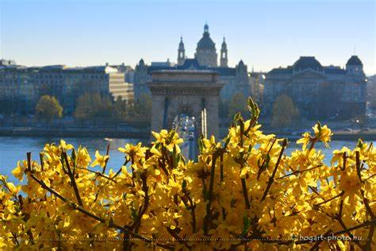
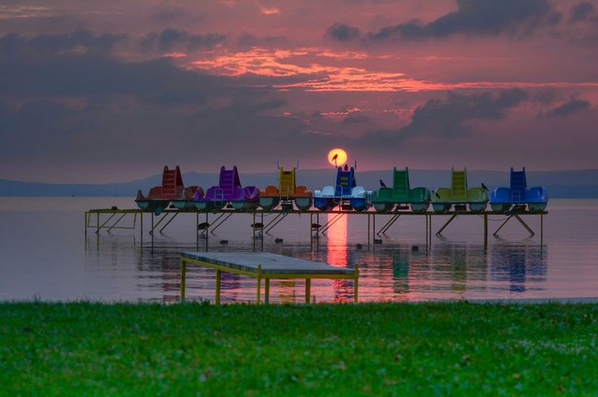

Valami nagy-nagy tüzet kéne rakni,
Hogy melegednének az emberek.
Ráhányni mindent, ami antik, ócska,
Csorbát, töröttet s ami új, meg ép,
Gyermekjátékot, – ó, boldog fogócska!
– S rászórni szórva mindent, ami szép.
Dalolna forró láng az égig róla S kezén fogná mindenki földiét.
Valami nagy-nagy tüzet kéne rakni, Hisz […]
Jaj, te, érzed-e? Szerető is kéne, Friss, hóvirághúsú, kipirult suhanás. Őzikém, mondanám, ölelj meg igazán! Minden gyerek lelkes, jóizű kacagás!
Tavasz van, gyönyörű! Jót rikkant az ég! Mit beszélsz? korai? Nem volt itt sose tél! Pattantsd ki a szíved, elő a rügyekkel – A mi tüdőnkből száll ki a tavaszi szél!
Várnak a tavak, csónakok, stégek. És tényleg a táblán virul egy szó, Csupaszín betűkkel: VAKÁCIÓ!
Két hónap napfény vár ránk a nyárban, Kószálunk vígan viruló tájban, Hűsítő tavakra, strandokra járunk, Nincs is ilyenkor boldogabb nálunk.
aki éri, ráléphet, - sziszegő szél söpri-hajtja, hullongó hó betakarja.